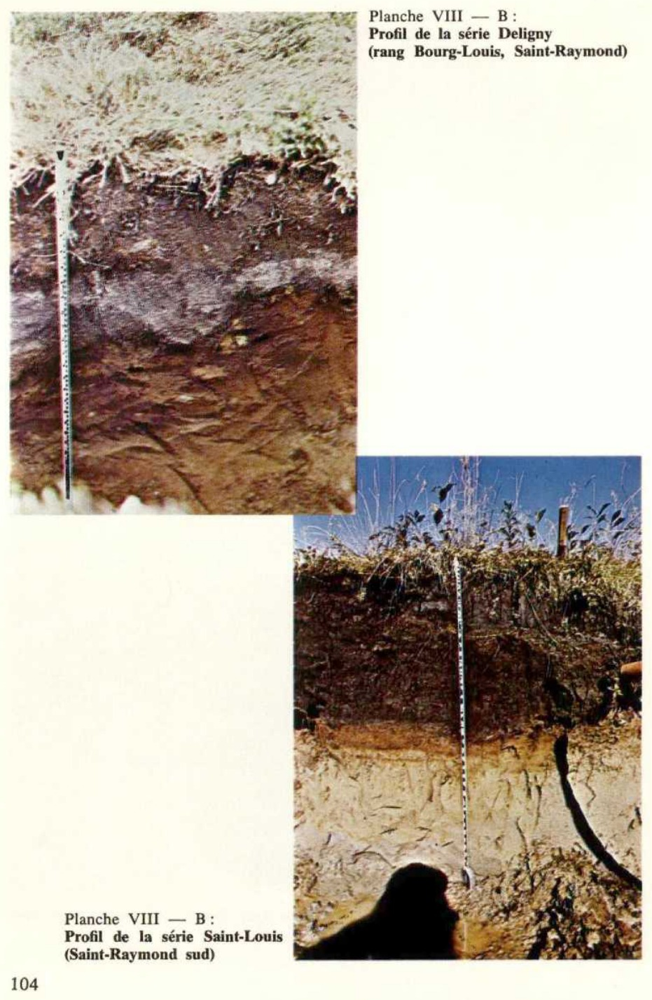
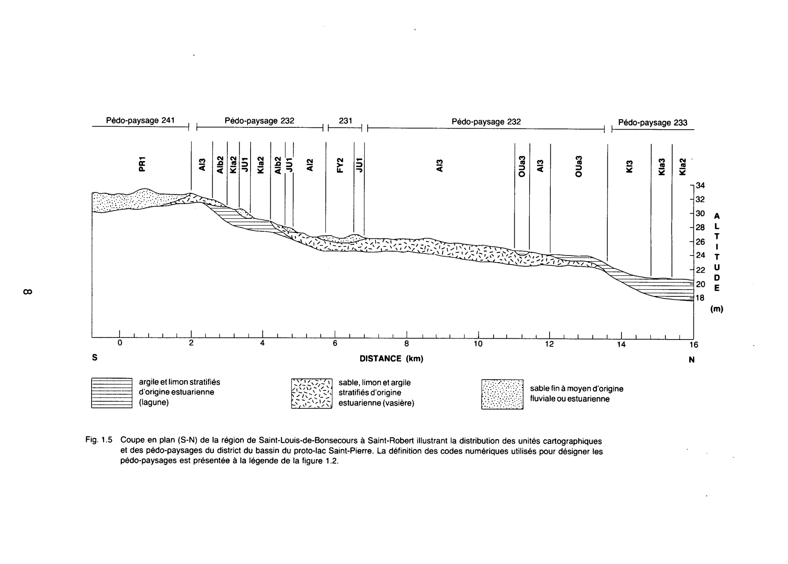
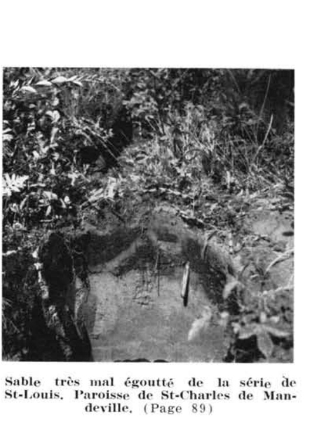

Identification & Caractéristiques Générales
Les sols de la série Saint-Louis se sont développés sur des dépôts meubles sableux à sablo-loameux, souvent d'origine fluvioglaciaire ou deltaïque, mis en place en bordure du Bouclier canadien et des Basses-Terres du Saint-Laurent. Sur le plan géomorphologique, cette série occupe exclusivement des positions topographiques planes, horizontales à légèrement déprimées, localisées au sein de bassins fermés, de bas de pentes ou sur les replats inférieurs de terrasses. Ces formations s'intègrent généralement dans une caténa en association avec les séries Morin et Deligny, constituant le terme d'accumulation et de ressuyage déficitaire de cette séquence pédogénétique.
Sur le plan morphologique, le profil pédologique présente un degré d'évolution restreint, caractérisé par un horizon de surface fortement humifère ou une mince couverture organique reposant sur un matériau minéral sableux à sableux loameux. Le régime hydrique est fortement déficitaire en raison d'un drainage naturel mauvais à très mauvais et d'une position topographique basse. La nappe phréatique affleure fréquemment à faible profondeur, particulièrement en période de fonte nivale ou lors des épisodes pluvieux prolongés, soutenue par la présence éventuelle de stratifications sous-jacentes moins perméables. Le profil montre des indices gleyiques prononcés, témoignant de conditions d'oxydoréduction marquées et d'un engorgement hydrique quasi permanent. La réaction du sol est généralement acide et la pierrosité peut varier localement selon la proximité des moraines frontales ou des faciès de contact.
Les aptitudes agronomiques des sols de la série Saint-Louis sont sévèrement limitées par l'excès d'eau chronique, la faible fertilité naturelle des sables et, dans certains secteurs, la présence de phases caillouteuses ou de couches organiques minces. En raison de ces contraintes physiques majeures et des coûts prohibitifs qu'entraînerait l'installation d'un réseau de drainage souterrain adéquat, ces superficies sont presque exclusivement exclues des activités de mise en valeur agricole et sont maintenues sous couvert forestier, dominé par l'épinette noire, le cèdre, le mélèze ou le bouleau selon les conditions locales. Toute tentative de mise en culture y est fortement déconseillée, ces espaces devant être réservés à la sylviculture ou au reboisement.
Classification Taxonomique & Environnement Pédologique
| Ordre Pédologique | Gleysolique |
|---|---|
| Grand Groupe (SCSS) | Gleysol humique |
| Sous-Groupe Taxonomique | Gleysol humique régosolique |
| Famille Pédologique | Sableuse, mixte sableux, acide |
| Mode de Dépôt Parental | Fluviatile |
| Classe de Drainage Naturel | Mal drainé |
| Régime Thermique & Humidité | Frais / Subaquique |
Description Morphologique du Profil Type
Séquences génétiques des horizons pédologiques caractérisant le profil type représentatif de la série Saint-Louis :
Profil cultivé (agricole) — Comté de Champlain
✓ Source : Comté de Champlain — Page 44Couleur Munsell : 2.5YR 4/0
Structure & Consistance : Grumeleuse
Description morphologique : Sable à loam sableux humifère, gris foncé (2.5YR 4/0); structure grumeleuse; pH : 5.3.
Couleur Munsell : 2.5YR 3/2
Structure & Consistance : Particulaire
Description morphologique : Sable grossier rouge sombre (2.5YR 3/2); structure particulaire; présence de ocre rouge et lits horizontaux de sables noirs avec mica; pH : 5.5.
Couleur Munsell : 2.5YR 4/2
Structure & Consistance : Polyédrique à granulaire
Description morphologique : Sable grossier rouge faible (2.5YR 4/2); quelques rares taches de rouille; pH : 5.6.
Profil cultivé (agricole) — Comté de Joliette — Phase rocheuse
✓ Source : Comté de Joliette — Page 96Couleur Munsell : 10YR 2/1
Structure & Consistance : Polyédrique à granulaire
Description morphologique : Loam humifère, sans structure, noir (10YR 2/1), consistance meuble. pH: 5.3.
Couleur Munsell : 2.5Y 7/2, 2.5Y 4/2
Structure & Consistance : Polyédrique à granulaire
Description morphologique : Sable, sans structure, gris clair (2.5Y 7/2) avec taches brun gris foncé ( 2.5Y 4/2 ), sans consistance. pH: 5.6.
Couleur Munsell : 10YR 5/4, 10YR 4/8
Structure & Consistance : Polyédrique à granulaire
Description morphologique : Sable, sans structure, brun jaune (10YR 5/4) avec taches rouge jaune (10YR 4/8), sans consistance. pH: 5.5.
Profil représentatif — Comté de Maskinongé
✓ Source : Comté de Maskinongé — Page 53Couleur Munsell : 5YR 3/3
Structure & Consistance : Grumeleuse peu minéralisé (moder) ph : 5
Description morphologique : .Sable humifère brun rouge foncé (5YR 3/3 - 3/4) structure grumeleuse peu minéralisé (moder) pH : 5.7.
Couleur Munsell : 5YR 4/6
Structure & Consistance : Particulaire
Description morphologique : .Sable rouge jaune (5YR 4/6 - 4/8) structure particulaire, ocre rouge avec lits horizontaux de sable noir. pH : 5.8..
Couleur Munsell : 10YR 4/3
Structure & Consistance : Polyédrique à granulaire
Description morphologique : .Sable brun foncé (10YR 4/3) taches de rouille lits de sable noir ou très rouge. pH : 5.9.
Couleur Munsell : 10YR 6/1
Structure & Consistance : Polyédrique à granulaire
Description morphologique : .Sable gris (10YR 6/1 - 5/1) quelques rares taches de rouille, reposant sur substratum argileux à 3 pieds et plus. pH : 6.0.
Profil cultivé (agricole) — Comté de Portneuf
✓ Source : Comté de Portneuf — Page 70Couleur Munsell : 5YR 2/1.5, 5YR 2/2
Structure & Consistance : Polyédrique à granulaire
Description morphologique : Les épais- Matière organique à demi-décomposée avec débris végétaux seurs sont non décomposés, noire à brun-rouge foncé (5YR 2/1.5 h), constantes brun-rouge foncé (5YR 2/2 s) ; très friable ; racines abonda- pour ce dantes, grossières à microscopiques, non-orientées, exo-agré- profil. gats ; limite distincte, régulière ; pH : 3.7.
Couleur Munsell : 5YR 2/1, 5YR 2/2
Structure & Consistance : Polyédrique à granulaire
Description morphologique : Matière organique, noire (5YR 2/1 h), brun-rouge foncé (5YR 2/2 s) ; très friable ; racines abondantes, grossières à microscopiques, non-orientées, exo-agrégats ; limite abrupte, régulière ; pH : 3.8.
Couleur Munsell : 10YR 2/1, 10YR 4/1
Structure & Consistance : Polyédrique à granulaire
Description morphologique : Matière organique bien décomposée, noire (10YR 2/1 h), gris foncé (10YR 4/1 s) ; très friable ; racines abondantes, grossières à microscopiques non-orientées, exo-agrégats ; limite abrupte, régulière ; pH : 4.4.
Couleur Munsell : 7.5YR 3/2
Structure & Consistance : Polyédrique à granulaire
Description morphologique : Sable brun foncé (7.5YR 3/2 h, 4/2 s) ; particulaire ; meuble ; racines très peu abondantes, très fines et microscopiques, verticales, exo-agrégats ; limite distincte, régulière ; pH : 4.9.
Couleur Munsell : 5Y 5/1, 5Y 7/2, 10YR 4/2
Structure & Consistance : Polyédrique à granulaire
Description morphologique : Sable fin gris (5Y 5/1 h), gris clair (5Y 7/2 s) ; taches brun-gris foncé (10YR 4/2 h) assez nombreuses, moyennes, très marquées ; particulaire ; meuble ; limite distincte, régulière ; pH : 5.3.
Couleur Munsell : 5Y 5/1, 5Y 7/1
Structure & Consistance : Polyédrique à granulaire
Description morphologique : Sable gris (5Y 5/1 h), gris clair (5Y 7/1 s) ; particulaire ; meuble ; pH : 5.1.
Profil forestier / boisé — Comté de Trois-rivières
✓ Source : Comté de Trois-rivières — Page 53Couleur Munsell : 10YR 2/1
Structure & Consistance : Polyédrique à granulaire
Description morphologique : Humus, noir (10YR 2/1) parfois minéralisé; pH : 5.3.
Couleur Munsell : 2.5Y 7/2, 2.5Y 1/3
Structure & Consistance : Polyédrique à granulaire
Description morphologique : Sable, sans structure, gris clair (2.5Y 7/2) avec taches de couleur gris foncé (2.5Y 1/3), sans consistance; pH : 5.6.
Couleur Munsell : 10YR 5/4, 2.5Y 5/6
Structure & Consistance : Polyédrique à granulaire
Description morphologique : Sable, sans structure, brun jaune (10YR 5/4) avec taches de couleur olive clair (2.5Y 5/6), sans consistance; pH : 5.5.
Profil forestier (sous boisé) — Comté de Québec
✓ Source : Comté de Québec — Page 29Couleur Munsell : 5YR 2/1.5, 5YR 2/2
Structure & Consistance : Polyédrique à granulaire
Description morphologique : Matière organique à demi-décomposée avec débris végétaux non décomposés, noire à brun-rouge foncé (5YR 2/1.5 h), brun-rouge foncé (5YR 2/2 s); très friable; racines abondantes, grossières à microscopiques, non-orientées, exo-agrégats; limite distincte, régulière; pH : 3.7.
Couleur Munsell : 5YR 2/1, 5YR 2/2
Structure & Consistance : Polyédrique à granulaire
Description morphologique : Matière organique, noire (5YR 2/1 h), brun-rouge foncé (5YR 2/2 s); très friable; racines abondantes, grossières à microscopiques, non-orientées, exo-agrégats; limite abrupte, régulière; pH: 3.8.
Couleur Munsell : 10YR 2/1, 10YR 4/1
Structure & Consistance : Polyédrique à granulaire
Description morphologique : Matière organique bien décomposée, noire (10YR 2/1 h), gris foncé (10YR 4/1 s); très friable; racines abondantes, grossières à microscopiques non-orientées, exo-agrégats; limite abrupte, régulière; pH : 4.4.
Couleur Munsell : 7.5YR 3/2
Structure & Consistance : Polyédrique à granulaire
Description morphologique : Sable brun foncé (7.5YR 3/2 h, 4/2 s); particulaire; meuble; racines très peu abondantes, très fines et microscopiques, verticales, exo-agrégats; limite distincte, régulière pH : 4.9.
Couleur Munsell : 5Y 5/1, 5Y 7/2, 10YR 4/2
Structure & Consistance : Polyédrique à granulaire
Description morphologique : Sable fin gris (5Y 5/1 h), gris clair (5Y 7/2 s); taches brun-gris foncé (10YR 4/2 h) assez nombreuses, moyennes, très marquées; particulaire; meuble; limite distincte, régulière; pH : 5.3.
Couleur Munsell : 5Y 5/1, 5Y 7/1
Structure & Consistance : Polyédrique à granulaire
Description morphologique : Sable gris (5Y 5/1 h), gris clair (5Y 7/1 s); particulaire; meuble; pH: 5.1.
Profils Photographiques & Planches de Terrain
Documents iconographiques, figures pédologiques et coupes de terrain documentées dans les mémoires d'inventaire pour de la série Saint-Louis :




Propriétés Physico-Chimiques & Analyses de Laboratoire
| Horizon | Prof. (pces/cm) | Sable % | Limon % | Argile % | pH | C % | N % | Ca éch. | Mg éch. | K éch. | H+ éch. | Bases tot. | C.E.C. (meq/100g) | Saturation % | ||||||||||||
|---|---|---|---|---|---|---|---|---|---|---|---|---|---|---|---|---|---|---|---|---|---|---|---|---|---|---|
| L (Ap) | 51-31 | 3.7 | 3.3 | 54.94 | 1.32 | 0.33 | 0.11 | 0.30 | 0.05 | 0.38 | 0.12 | 15.80 | 2.03 | 0.31 | 0.15 | 112.0 | 130.29 | 14 | 16 | |||||||
| F | 31-11 | 3.8 | 3.4 | 58.44 | 1.24 | 0.24 | 0.26 | 0.18 | 0.22 | 0.20 | 0.25 | 9.20 | 1.30 | 0.12 | 0.12 | 96.0 | 106.74 | 10 | 8 | |||||||
| H | 11-0 | 4.4 | 4.0 | 29.22 | 0.42 | 0.04 | 0.58 | 0.03 | 0.84 | 0.04 | 0.83 | 1.70 | 0.18 | 0.05 | 0.04 | 48.0 | 49.97 | 4 | 44 | |||||||
| Bg | 0-10 | 6.0 | 22.0 | 46.0 | 21.0 | 95.0 | 3.0 | 2.0 | 4.9 | 4.5 | 14.70 | 0.04 | 0.03 | 0.19 | 0.25 | 0.27 | 0.02 | 0.26 | 0.45 | 0.07 | 0.02 | 0.01 | 3.0 | 3.55 | 15 | 118 |
| Cg1 | 10-24 | 1.0 | 17.0 | 58.0 | 21.0 | 97.0 | 2.0 | 1.0 | 5.3 | 4.8 | 0.14 | 0.01 | 0.06 | 0.10 | 0.04 | 0.15 | 0.03 | 0.08 | 0.25 | 0.04 | 0.02 | 0.01 | 0.5 | 0.82 | 39 | 144 |
| Cg2 | à 85 cm | 2.0 | 36.0 | 46.0 | 15.0 | 99.0 | 1.0 | 0.0 | 5.1 | 4.4 | 0.06 | 0.00 | 0.10 | 0.06 | 0.09 | 0.05 | 0.03 | 0.04 | 0.25 | 0.07 | 0.02 | 0.02 | 0.0 | 0.36 | 100 | 104 |
Particularités Régionales, Phases & Variantes Pédologiques
Déclinaisons régionales, faciès texturaux, phases d'érosion ou de pierrosité et variantes cartographiées par étude pour de la série Saint-Louis :
| Étude Régionale | Symbole | Appellation / Phase / Variante | Différenciation avec la série type (Analyse pédologique) |
|---|---|---|---|
| Comté de Berthier | Lu |
Saint-Louis sable loameux | Modalité modale de référence (type de base de la série). |
| Comté de Champlain | Lu |
Saint-Louis loam sableux | Faciès sableux très filtrant et pauvre en éléments nutritifs vis-à-vis du sable loameux de référence. |
| Comté de Joliette | Lu |
Saint-Louis sable loameux humifère | Phase humifère enrichie en matière organique superficielle. |
Lu-r |
Saint-Louis sable loameux phase rocheuse | Conforme à la série type de référence (caractéristiques texturales et drainage identiques). | |
| Comté de Maskinongé | Lu |
Saint-Louis sable | Faciès sableux très filtrant et pauvre en éléments nutritifs vis-à-vis du sable loameux de référence. |
Lu-r |
Saint-Louis sable phase rocheuse | Faciès sableux très filtrant et pauvre en éléments nutritifs vis-à-vis du sable loameux de référence. | |
| Comté de Portneuf | Lu |
Saint-Louis sable | Faciès sableux très filtrant et pauvre en éléments nutritifs vis-à-vis du sable loameux de référence. |
| Comté de Québec | Lu |
Saint-Louis sable | Faciès sableux très filtrant et pauvre en éléments nutritifs vis-à-vis du sable loameux de référence. |
Lu-d |
Saint-Louis sable avec discordance dans le matériau ou dans le profil | Faciès sableux très filtrant et pauvre en éléments nutritifs vis-à-vis du sable loameux de référence. | |
Lu-x |
Saint-Louis sable anthropique | Faciès sableux très filtrant et pauvre en éléments nutritifs vis-à-vis du sable loameux de référence. | |
| Comté de Trois-rivières | Lu |
Saint-Louis sable | Faciès sableux très filtrant et pauvre en éléments nutritifs vis-à-vis du sable loameux de référence. |
| Comté de Chambly | SB3 |
Saint-Blaise loam | Faciès loameux plus fin et équilibré que le sable loameux de référence (meilleure rétention en eau et nutriments). |
SB3h |
Saint-Blaise loam humifère | Phase humifère enrichie en matière organique superficielle; Faciès loameux plus fin et équilibré que le sable loameux de référence (meilleure rétention en eau et nutriments). | |
SB4 |
Saint-Blaise loam limono-argileux | Faciès argileux plus lourd et compact que le sable loameux de référence. | |
SB4b |
Saint-Blaise loam limono-argileux 3-8 % de pente | Faciès argileux plus lourd et compact que le sable loameux de référence. | |
SB4m |
Saint-Blaise loam limono-argileux mince | Phase mince sur substrat rocheux (< 50 cm); Faciès argileux plus lourd et compact que le sable loameux de référence. | |
SB4p |
Saint-Blaise loam argileux pierreux | Phase pierreuse (abondance de cailloux et blocs en surface); Faciès argileux plus lourd et compact que le sable loameux de référence. | |
SB5 |
Saint-Blaise argile limoneuse | Faciès argileux plus lourd et compact que le sable loameux de référence. | |
SBa3 |
Saint-Blaise variante non calcaire loam | Variante décarbonatée (non calcaire) à réaction plus acide; Faciès loameux plus fin et équilibré que le sable loameux de référence (meilleure rétention en eau et nutriments). | |
SBa4 |
Saint-Blaise variante non calcaire loam limono-argileux | Variante décarbonatée (non calcaire) à réaction plus acide; Faciès argileux plus lourd et compact que le sable loameux de référence. | |
| Comté de Châteauguay | B |
Saint-Blaise loam argileux | Faciès argileux plus lourd et compact que le sable loameux de référence. |
| Comté de Iberville | SB |
Saint-Blaise argileux sur till loameux fin alcalin | Phase peu profonde sur till; Faciès argileux plus lourd et compact que le sable loameux de référence. |
| Comté de Laprairie | SB3 |
Saint-Blaise loam | Faciès loameux plus fin et équilibré que le sable loameux de référence (meilleure rétention en eau et nutriments). |
SB3h |
Saint-Blaise loam humifère | Phase humifère enrichie en matière organique superficielle; Faciès loameux plus fin et équilibré que le sable loameux de référence (meilleure rétention en eau et nutriments). | |
SB3p |
Saint-Blaise loam légèrement à modérément pierreux | Phase légèrement à modérément pierreuse (obstruction mécanique modérée); Faciès loameux plus fin et équilibré que le sable loameux de référence (meilleure rétention en eau et nutriments). | |
SB4 |
Saint-Blaise loam limono-argileux | Faciès argileux plus lourd et compact que le sable loameux de référence. | |
SB4p |
Saint-Blaise loam argileux légèrement à modérément pierreux | Phase légèrement à modérément pierreuse (obstruction mécanique modérée); Faciès argileux plus lourd et compact que le sable loameux de référence. | |
SB5 |
Saint-Blaise argile limoneuse | Faciès argileux plus lourd et compact que le sable loameux de référence. | |
| Les sols de l’Île de Montréal | Bl |
Saint-Blaise loam | Faciès loameux plus fin et équilibré que le sable loameux de référence (meilleure rétention en eau et nutriments). |
Bl-a |
Saint-Blaise argile mince | Phase mince sur substrat rocheux (< 50 cm); Faciès argileux plus lourd et compact que le sable loameux de référence. | |
| Comté de Napierville | SB |
Saint-Blaise | Conforme à la série type de référence (caractéristiques texturales et drainage identiques). |
SBh |
Saint-Blaise humifère | Phase humifère enrichie en matière organique superficielle. | |
| Comté de Rouville | SB3 |
Saint-Blaise loam | Faciès loameux plus fin et équilibré que le sable loameux de référence (meilleure rétention en eau et nutriments). |
SB4 |
Saint-Blaise loam limono-argileux | Faciès argileux plus lourd et compact que le sable loameux de référence. | |
SB4p |
Saint-Blaise loam limono-argileux légèrement à modérément pierreux | Phase légèrement à modérément pierreuse (obstruction mécanique modérée); Faciès argileux plus lourd et compact que le sable loameux de référence. | |
| Comté de Saint-jean | SB |
Saint-Blaise loam | Faciès loameux plus fin et équilibré que le sable loameux de référence (meilleure rétention en eau et nutriments). |
SBbp |
Saint-Blaise loam 3-8% de pente légèrement à modérément pierreux | Phase légèrement à modérément pierreuse (obstruction mécanique modérée); Faciès loameux plus fin et équilibré que le sable loameux de référence (meilleure rétention en eau et nutriments). | |
| Comté de Verchères | SB4 |
Saint-Blaise loam limono-argileux | Faciès argileux plus lourd et compact que le sable loameux de référence. |
SB5 |
Saint-Blaise argile limoneuse | Faciès argileux plus lourd et compact que le sable loameux de référence. | |
SB5m |
Saint-Blaise argile limoneuse mince | Phase mince sur substrat rocheux (< 50 cm); Faciès argileux plus lourd et compact que le sable loameux de référence. |
Distribution Pédo-Paysagère & Représentativité Cartographique (Couverture PPS 2026)
- Ivry sable fin à loam sableux (IVR) — co-occurrente dans 58 polygone(s)
- Sainte-Agathe loam sableux fin (SNG) — co-occurrente dans 55 polygone(s)
- Deligny sable limoneux (DIY) — co-occurrente dans 52 polygone(s)
Aptitudes Agronomiques, Hydropédologie & Conservation des Sols
Indicateurs Hydropédologiques & Vulnérabilité à l'Érosion (BDHP 2026)
Interprétation BDHP : Sols à double groupe : C à l'état drainé artificiellement, D à l'état naturel non drainé.
Classement selon l'Inventaire des Terres du Canada (ITC / CLI) : Classe 3w.
- Potentiel agricole : Terroir adapté aux cultures régionales selon la texture dominante et la régie de drainage.
- Contraintes majeures : Mal drainé. Risque d'engorgement temporaire ou d'excès d'eau printanier.
- Gestion & Aménagement : Drainage souterrain ou superficiel préconisé sur les terres planes. Chaulage et apport organique régulier selon les bilans agronomiques.
- Cultures adaptées : Grandes cultures (maïs, soya, céréales), prairies fourragères et cultures maraîchères selon le contexte géomorphologique.